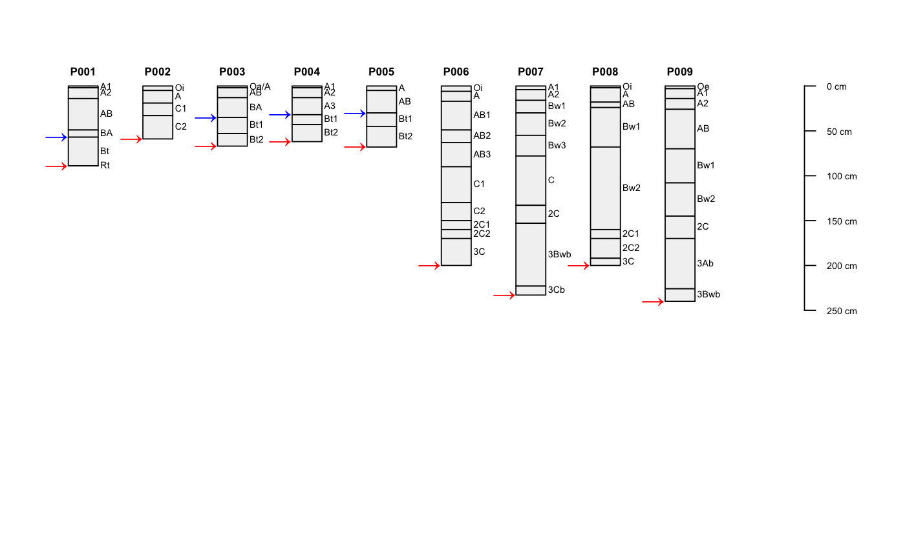
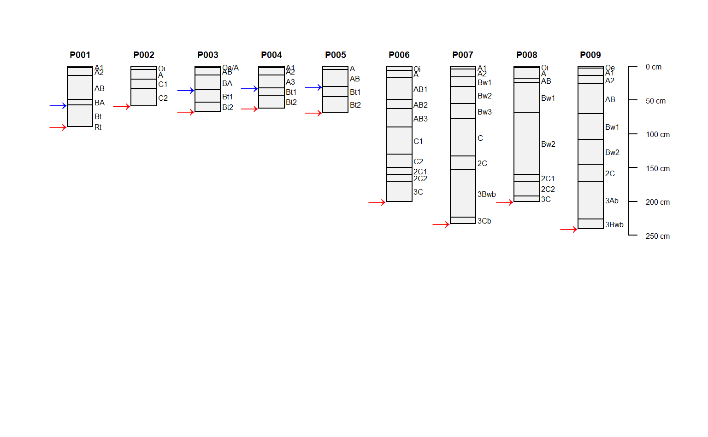

Estimate the soil depth of a single profile within a SoilProfileCollection object. This function would typically be called by profileApply.
estimateSoilDepth( f, name = "hzname", p = "Cr|R|Cd", selection = min, no.contact.depth = NULL, no.contact.assigned = NULL )
| f | SoilProfileCollection object of length 1, e.g. a single profile |
|---|---|
| name | name of the column that contains horizon designations |
| p | REGEX pattern for determining "contact", or depth to some morphologic feature (e.g. |
| selection | function applied in the presence of multiple matching horizons: |
| no.contact.depth | in the absence of contact matching |
| no.contact.assigned | value assigned when no contact is encountered at or below |
single value representing the depth to contact or no.contact.assigned
The choice of a selection function usually follows:
min: the top of the first matching horizon, max: the top bot the last matching horizon,
or possibly mean: somewhere in-between.
D.E. Beaudette and J.M. Skovlin
## consider a situation where there were multiple candidate ## "contacts": 2 Cd horizons over an R # init hypothetical profile d <- data.frame( id = '1', top = c(0, 10, 20, 30, 40, 50, 60), bottom = c(10, 20, 30, 40, 50, 60, 80), name = c('A', 'Bt1', 'Bt2', 'BC', 'Cd1', 'Cd2', 'R'), stringsAsFactors = FALSE ) # upgrade to SPC depths(d) <- id ~ top + bottom # visual check par(mar = c(0, 0, 0, 1)) plotSPC(d, hz.depths = TRUE, name.style = 'center-center', cex.names = 1)  # top of the first Cd estimateSoilDepth(d, name = 'name') #> [1] 40 # top of the first Cd estimateSoilDepth(d, name = 'name', selection = min) #> [1] 40 # top of the R estimateSoilDepth(d, name = 'name', selection = max) #> [1] 60 # top of the second Cd estimateSoilDepth(d, name = 'name', selection = max, p = 'Cd') #> [1] 50 ## another example data(sp1) depths(sp1) <- id ~ top + bottom # apply to each profile in a collection, and save as site-level attribute sp1$depth <- profileApply(sp1, estimateSoilDepth, name='name') # this function can be used to "find" depth to any feature # that can be defined via REGEX pattern matching on the horizon name # for example, locate the depth to the top "Bt" horizon # returning NA when there is no match sp1$top_Bt <- profileApply( sp1, estimateSoilDepth, name='name', p='Bt', no.contact.depth=0, no.contact.assigned=NA ) # reduced margins par(mar=c(1,1,1,2)) # adjust default y-offset and depth scaling for following examples plotSPC(sp1, y.offset=10, scaling.factor=0.5) # get plotting parameters for profile widths and depth scaling factors lsp <- get("last_spc_plot", envir = aqp.env) # positions on x-axis, same for both depth and top "Bt" horizon x.positions <- (1:length(sp1)) - lsp$width # annotate contact with unicode right-arrow # y-position is adjusted based on plot y-offset and scaling factor y.positions <- lsp$y.offset + (sp1$depth * lsp$scaling.factor) text(x.positions, y.positions, '\u2192', col='red', adj=1, cex=1.25, lwd=2) # annotate top "Bt" depth with unicode right-arrow # y-position is adjusted based on plot y-offset and scaling factor y.positions <- lsp$y.offset + (sp1$top_Bt * lsp$scaling.factor) text(x.positions, y.positions, '\u2192', col='blue', adj=1, cex=1.25, lwd=2)  if (FALSE) { # sample data data(gopheridge, package='soilDB') # run on a single profile estimateSoilDepth(gopheridge[1, ]) # apply to an entire collection profileApply(gopheridge, estimateSoilDepth) }